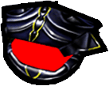

Granada
Kurt puede lanzar a sus enemigos la granada convencional, que crea daños
por impacto. La distancia a la que se lanza la granada depende del ángulo
hacia arriba que se adopta al lanzarla. Ten cuidado, porque Kurt puede resultar
herido por sus propias granadas.

Muñeco señuelo
Kurt puede lanzar el muñeco señuelo para confundir al enemigo. Al no ser
demasiado inteligentes, los alienígenas no pueden distinguir bien entre Kurt y
su señuelo. De hecho, prefieren disparar a éste, debido a lo satisfactorio de su
respuesta ante los ataques.

Ocultador
Uno de los objetos más efectivos de Kurt es el ocultador. Éste hace que Kurt
sea invisible a los ojos de los alienígenas y le permite atravesar sus defensas
sin sufrir daños. Ten cuidado, ya que el ocultador tiene una vida limitada.
Las siguientes balas y objetos de francotirador se pueden cargar en la mira telescópica
para dispararlos con distintos efectos.
|
Bala de francotirador
La bala convencional de francotirador recorre una trayectoria recta hasta su
objetivo, causando daños al hacer impacto.
|

|
|
Obús buscador francotirador
La bala buscadora persigue a su objetivo.
|

|
|
Mortero de francotirador
El mortero de francotirador sigue una trayectoria parabólica hasta su objetivo.
Esta trayectoria se puede usar para alcanzar lugares de difícil acceso.
|
|
|
Granada de francotirador
La granada de francotirador sigue una trayectoria recta y explota al hacer contacto.
|

|
|
Obús rebotador
Como su propio nombre indica, la bala rebotadora "rebota" en varias paredes antes de llegar a su objetivo.
|

|
|
Escudo de francotirador
El escudo de francotirador absorbe los daños creados por las armas alienígenas
durante un periodo de tiempo limitado.
|

|